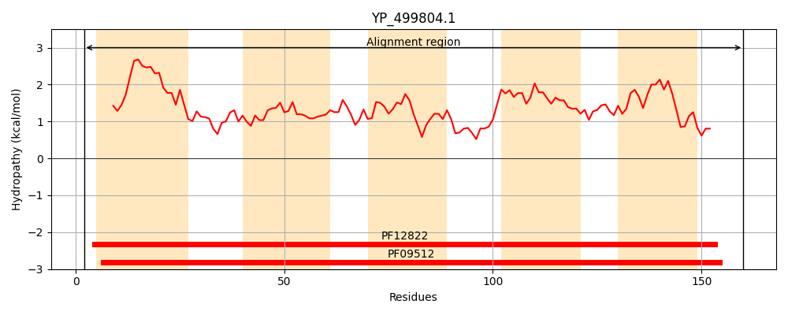
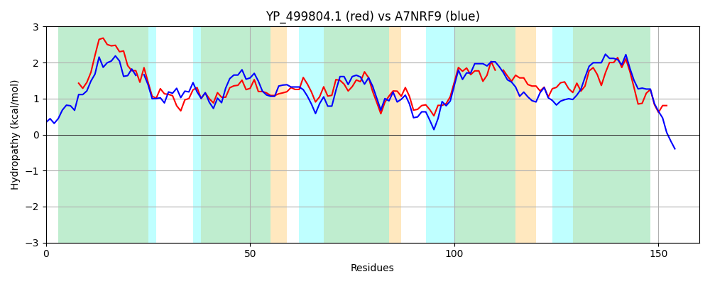

Hit Accession: A7NRF9
Hit TCID: 3.A.1.26.5
Hit Description: gnl|BL_ORD_ID|719 gnl|TC-DB|A7NRF9|3.A.1.26.5 ThiW protein - Roseiflexus castenholzii DSM 13941.
Mach Len: 160
e:0.000000
Query TMS Count : 5
Hit TMS Count: 5
TMS-Overlap Score: 4.550000
Predicted Substrates:CHEBI:9530;thiamine(1+)
BLAST Alignment:
Score: 320 , Bit scores: 127 bits, E-value: 4.1e-38, Alignment length: 160, Percentage identity: 43
Query: 2 KSRKLAITALLIAINVVLSSIIIIPLGPVKAAPVQHFVNVLSAVIVGPWYGLAQALISSILRVLFGTGTAFAFPGSMIGVLLASMFYIYRKHIFMAAVGEVLGTGVIGSLI-CIPLAYFLGLQDFFIKPLMITFIVSSAIGSIISYFLLITLKKRGILQR 160
++R+LA +L A+ V LS I I P+G K PVQH VNVL+ ++GPW+GLA AL++SI+R G GT AFPGS+ GVLLA + Y ++I + GEV+GTG+IG+LI + +A ++ + L+I F +SS +G+++ L+ L++ G L+R
Sbjct: 11 QTRRLAYAIVLTALAVALSPISI-PVGIAKVFPVQHMVNVLAGALIGPWWGLAVALVTSIVRNALGLGTPLAFPGSIFGVLLAGLIYRATRNIPLTVAGEVIGTGIIGALIGALVVAPYVMNRPMGATALIIPFALSSLVGAVLGALGLLALRRTGYLER 169 | Protein Hydropathy Plots: |
|---|
|  |  |
Pairwise Alignment-Hydropathy Plot:
|
|---|
|  |